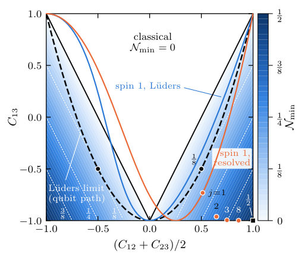
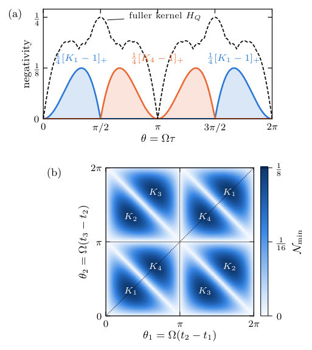
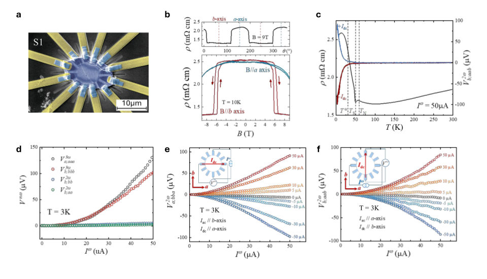
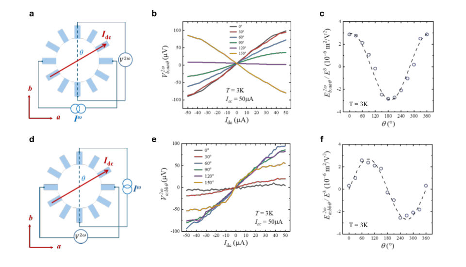
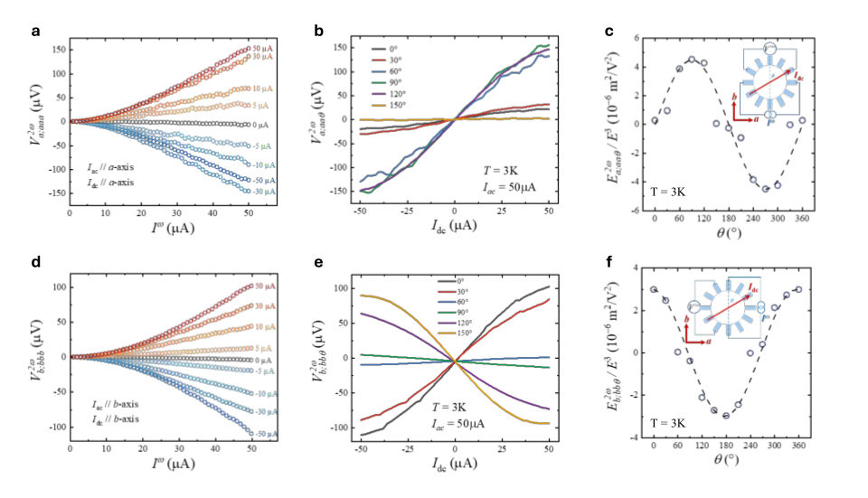

2 papers with Weizmann affiliations
Authors: Rathindra Nath Das, Arnab Kundu, Nemai Chandra Sarkar
Type: theory · Category: quantum information and computing · PDF: https://arxiv.org/pdf/2610.33429v1
Analysis basis: full PDF text, analyzed in chunks
Topic relevance: quantum measurements 3/5


Summary. This theoretical paper establishes an exact, universal bound connecting violations of Leggett-Garg inequalities to the negativity of a constructed spacetime density kernel. By analyzing how correlations measured at multiple times constrain the quantum state, the authors provide a powerful diagnostic tool to quantify non-classical temporal correlations in quantum systems.
Why it may be interesting. This work provides rigorous, quantitative bounds on non-classical temporal correlations, which is crucial for understanding quantum memory, quantum process tomography, and the limits of local realism in time.
Main problem. The paper addresses the fundamental problem of testing Leggett-Garg (LG) inequalities, which determine if correlations measured at different times admit a positive joint probability distribution over histories.
Main result. The authors establish an exact, universal bound relating LG violations to the least compatible kernel negativity, showing that this minimum negativity is zero if and only if all LG inequalities are satisfied.
Method. The methodology involves extending density matrices to 'spacetime density kernels' and deriving bounds on the negativity of these kernels based on measured pair correlations and additional observables.
Model / system. The study analyzes quantum systems undergoing measurements at multiple time points, using the framework of spacetime density kernels to describe temporal correlations.
Key observables. Leggett-Garg (LG) violation, kernel negativity ($N$), pair correlations ($C_{ij}$), and the minimum compatible kernel negativity ($N_{\min}$).
Important parameters / regimes. The number of measurement times ($n$), the specific observables measured (e.g., $\sigma_z$ vs. $\sigma_x$), and the initial state/dynamics.
Assumptions / limitations. The analysis relies on constructing compatible kernels that reproduce measured correlations, and it distinguishes between the minimum negativity required by a set of averages and the negativity of the full kernel.
Figures summary. Figures compare the minimum negativity ($N_{\min}$) revealed by different LG inequalities (e.g., $K_1, K_4, K_2, K_3$) for qubit measurements, contrasting results from Lüders protocols versus fully resolved measurements.
Paper structure. The paper progresses by first defining the LG test using pair correlations, then deriving the universal bound using spacetime kernels, and finally extending the analysis to include additional, incompatible observables to find tighter bounds.
Leggett-Garg (LG) inequalities test whether correlations measured at different times admit a positive joint probability distribution over histories. A violation requires negative values in any joint quasiprobability distribution reproducing those correlations, but such distributions can have negative values even without a violation. Spacetime density kernels extend the density-matrix description to multiple times and are used to study timelike entanglement. We establish a universal bound that relates LG violations to their negative eigenvalue weight. For LG tests involving any number of measurements, we determine the least compatible kernel negativity through an exact relation valid for any system dimension, initial state, dynamics, or measurement rule. This minimum is nonzero if and only if at least one LG inequality is violated. Three-time Lüders LG tests certify at most one eighth of negativity, whereas measurements resolving individual spin levels can approach one half. Including additional incompatible qubit observables gives a further exact minimum that can exceed the LG-only ceiling without increasing the LG violation.
Authors: Subin Mali, Yufei Zhao, Yu Wang, Binghai Yan, Zhiqiang Mao
Type: both · Category: strongly correlated electrons · PDF: https://arxiv.org/pdf/2610.35614v1
Analysis basis: full PDF text, analyzed in chunks
Topic relevance: Keldysh / 2PI / non-Gaussian methods 1/5



Summary. The authors demonstrate that the second-harmonic transport in the correlated material Ca3Ru2O7 is governed by a giant third-order nonlinearity, which is controllable via an applied DC bias. This strong nonlinear response is intrinsically linked to the material's electronic reconstruction occurring below a specific transition temperature. The findings establish a pathway for electrically tuning nonlinear optical responses in correlated topological materials.
Why it may be interesting. This work demonstrates how strong electronic correlations can manifest as giant, electrically tunable nonlinear responses, providing a platform for studying emergent quantum phenomena in condensed matter systems.
Main problem. To investigate how strong higher-order nonlinearity can amplify an effective second-order response, providing a route to electrically tunable nonlinear transport in correlated materials.
Main result. The dc-field-induced second-harmonic transport in Ca3Ru2O7 is shown to arise from its third-order nonlinear conductivity, which is strongly enhanced by the material's low-temperature electronic reconstruction.
Method. The study combines electrical transport measurements (measuring second-harmonic voltage response under dc bias) with theoretical calculations (DFT+U) to model the nonlinear conductivity tensor.
Model / system. The physical system is Ca3Ru2O7 (CRO), a correlated polar metal. The analysis focuses on the nonlinear current density described by a third-order tensor, $\mathbf{j}_i^{2\omega} \propto \sigma_{i;jkl}^{(3)} E_j^{\omega} E_k^{\omega} E_{l}^{ ext{dc}}$.
Key observables. Second-harmonic voltage response ($\mathbf{V}^{2\omega}$), third-order conductivity ($\sigma^{(3)}$), and the temperature dependence of the response relative to the spin-reorientation transition ($T_S \approx 48 ext{ K}$).
Important parameters / regimes. The third-harmonic electric-field responsivity reaches $4.5 imes 10^{-6} ext{ m}^2 ext{V}^{-2}$ at $3 ext{ K}$. The enhancement factor of the second-harmonic signal is reported to be $>10$ times.
Assumptions / limitations. The enhancement mechanism is attributed to the reconstruction of the low-energy electronic state below $T_S$, which modifies the underlying third-order conductivity tensor.
Figures summary. Figures show device geometry and magnetoresistance, alongside temperature-dependent resistivity and the dc-bias-induced second-harmonic response. Angular dependence studies map out the symmetry-allowed components of the nonlinear response.
Paper structure. The paper establishes the context of nonlinear transport, details the experimental measurements of the second-harmonic response in CRO, analyzes the scaling and angular dependence to confirm its origin in third-order conductivity, and concludes by linking this giant nonlinearity to the correlated electronic reconstruction.
Nonlinear electrical transport enables the conversion and detection of electromagnetic signals, supporting wireless energy harvesting, sensing and frequency conversion. Achieving both a large response and electrical tunability remains a central materials challenge. Here we harness giant third-order nonlinearity to amplify and electrically control second-harmonic transport in the correlated polar metal Ca3Ru2O7. Superposing a dc bias on an ac excitation enhances the second-harmonic signal by more than an order of magnitude. The bias controls the polarity of the induced response and activates channels forbidden by symmetry at zero bias. Both transverse and longitudinal components scale quadratically with the ac excitation and are odd in the dc bias, with angular dependences consistent with third-order conductivity. The underlying third-harmonic electric-field responsivity reaches 4.5 \times 10-6 m2V-2 at 3 K, providing a quantitative measure of the strong nonlinearity. The induced response emerges below the spin-reorientation transition near 48 K, linking its enhancement to the reconstructed low-temperature electronic state. Theoretical calculations identify quantum-geometric contributions to the nonlinear conductivity and reproduce the observed response symmetry. These results demonstrate how strong higher-order nonlinearity can amplify an effective second-order response, providing a route to electrically tunable nonlinear transport in correlated materials.